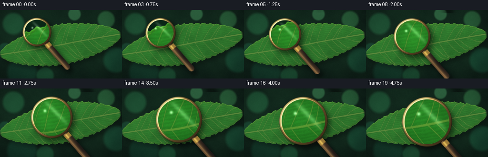
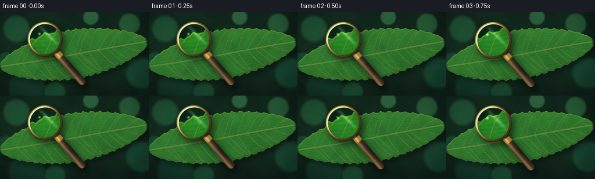

CODING AGENTS AS PIXEL WORLD MODELS
traex/DeepSeek-V4.1-Flash · phygen_068
点击播放 · 原生 RGB 像素
逐轮保存的候选
回放视频、检查图与代码变化。
每份候选均可单独播放。实际图片检查记录在下方工具轨迹中。
候选 01播放与检查图
点击播放 · 原生 RGB 像素


展开代码变化
--- 上一保存版本
+++ 本次保存版本
@@ -0,0 +1,404 @@
+from __future__ import annotations
+
+from pathlib import Path
+
+import cv2
+import numpy as np
+from scipy.ndimage import gaussian_filter, map_coordinates
+
+import artifact_io
+
+
+OUT_W, OUT_H = 256, 144
+FRAMES = 20
+FPS = 4.0
+SS = 4
+W, H = OUT_W * SS, OUT_H * SS
+
+
+def smoothstep(edge0: float, edge1: float, value: np.ndarray | float) -> np.ndarray:
+ x = np.clip((value - edge0) / (edge1 - edge0), 0.0, 1.0)
+ return x * x * (3.0 - 2.0 * x)
+
+
+def resize_noise(rng: np.random.Generator, cell: int) -> np.ndarray:
+ small = rng.random((H // cell + 3, W // cell + 3), dtype=np.float32)
+ return cv2.resize(small, (W, H), interpolation=cv2.INTER_CUBIC)
+
+
+def fractal_noise(rng: np.random.Generator, octaves: tuple[tuple[int, float], ...]) -> np.ndarray:
+ result = np.zeros((H, W), dtype=np.float32)
+ total = 0.0
+ for cell, weight in octaves:
+ result += weight * resize_noise(rng, cell)
+ total += weight
+ result /= total
+ result -= result.min()
+ result /= max(float(result.max()), 1e-6)
+ return result
+
+
+def make_background(rng: np.random.Generator) -> np.ndarray:
+ yy, xx = np.mgrid[0:H, 0:W].astype(np.float32)
+ nx = (xx - W * 0.46) / W
+ ny = (yy - H * 0.42) / H
+ radial = np.exp(-(nx * nx * 1.9 + ny * ny * 2.7))
+
+ broad = gaussian_filter(fractal_noise(rng, ((128, 0.55), (64, 0.3), (32, 0.15))), 24.0)
+ mid = gaussian_filter(fractal_noise(rng, ((48, 0.5), (24, 0.3), (12, 0.2))), 8.0)
+
+ bg = np.empty((H, W, 3), dtype=np.float32)
+ bg[..., 0] = 7.0 + 6.0 * radial + 7.0 * broad + 2.0 * mid
+ bg[..., 1] = 18.0 + 13.0 * radial + 15.0 * broad + 5.0 * mid
+ bg[..., 2] = 15.0 + 8.0 * radial + 8.0 * broad + 3.0 * mid
+
+ # Soft out-of-focus foliage highlights around the dark background.
+ bokeh = np.zeros((H, W), dtype=np.float32)
+ bokeh_color = np.zeros((H, W, 3), dtype=np.float32)
+ spots = [
+ (0.11, 0.20, 0.095, (28, 83, 51), 0.42),
+ (0.87, 0.14, 0.075, (45, 103, 58), 0.34),
+ (0.95, 0.73, 0.11, (16, 65, 45), 0.25),
+ (0.18, 0.91, 0.13, (11, 47, 34), 0.22),
+ (0.61, 0.06, 0.055, (55, 112, 70), 0.24),
+ (0.37, 0.96, 0.075, (20, 68, 42), 0.20),
+ (0.04, 0.58, 0.06, (17, 58, 42), 0.18),
+ ]
+ for sx, sy, radius, color, strength in spots:
+ dx = (xx / W - sx) * OUT_W
+ dy = (yy / H - sy) * OUT_H
+ r = np.sqrt(dx * dx + dy * dy) / (radius * OUT_W)
+ disk = smoothstep(1.08, 0.78, r)
+ edge = np.exp(-((r - 0.86) / 0.08) ** 2)
+ bokeh += strength * (disk + 0.35 * edge)
+ bokeh_color += disk[..., None] * np.asarray(color, dtype=np.float32)
+
+ bokeh = np.clip(bokeh, 0.0, 1.0)
+ denom = np.maximum(bokeh[..., None], 1e-5)
+ bg = bg * (1.0 - 0.52 * bokeh[..., None]) + 0.52 * (bokeh_color / denom) * bokeh[..., None]
+
+ # A quiet vignette keeps the eye on the leaf and magnifier.
+ vignette = 1.0 - 0.32 * smoothstep(0.42, 1.05, np.sqrt(nx * nx * 1.3 + ny * ny))
+ return np.clip(bg * vignette[..., None], 0.0, 255.0)
+
+
+def leaf_width(t: np.ndarray | float) -> np.ndarray:
+ t_arr = np.asarray(t, dtype=np.float32)
+ envelope = np.power(np.clip(1.0 - np.abs(t_arr) ** 1.68, 0.0, 1.0), 0.61)
+ serration = 1.0 + 0.030 * np.sin(19.0 * np.pi * (t_arr + 1.0))
+ serration += 0.012 * np.sin(43.0 * np.pi * (t_arr + 1.0))
+ return 42.2 * SS * envelope * serration
+
+
+def local_to_image(xr: np.ndarray, yr: np.ndarray, center: tuple[float, float], angle: float) -> tuple[np.ndarray, np.ndarray]:
+ ca, sa = np.cos(angle), np.sin(angle)
+ return center[0] + ca * xr - sa * yr, center[1] + sa * xr + ca * yr
+
+
+def draw_polyline(mask: np.ndarray, xs: np.ndarray, ys: np.ndarray, value: float, width: int) -> None:
+ pts = np.round(np.stack([xs, ys], axis=1)).astype(np.int32)
+ cv2.polylines(mask, [pts], False, float(value), thickness=width, lineType=cv2.LINE_AA)
+
+
+def make_leaf(rng: np.random.Generator) -> tuple[np.ndarray, np.ndarray]:
+ yy, xx = np.mgrid[0:H, 0:W].astype(np.float32)
+ center = (127.0 * SS, 72.5 * SS)
+ angle = np.deg2rad(-9.5)
+ length = 130.0 * SS
+ ca, sa = np.cos(angle), np.sin(angle)
+ dx = xx - center[0]
+ dy = yy - center[1]
+ xr = ca * dx + sa * dy
+ yr = -sa * dx + ca * dy
+ t = xr / length
+ hw = leaf_width(t)
+
+ signed_edge = np.abs(yr) - hw
+ alpha = 1.0 - smoothstep(-1.4, 1.8, signed_edge)
+ alpha *= smoothstep(-1.01, -0.96, t) * (1.0 - smoothstep(0.955, 0.997, t))
+
+ fine = fractal_noise(rng, ((64, 0.18), (24, 0.20), (10, 0.23), (4, 0.24), (2, 0.15)))
+ mottle = gaussian_filter(fractal_noise(rng, ((96, 0.42), (48, 0.33), (18, 0.25))), 10.0)
+ ridges = 0.5 + 0.5 * np.sin((yr / SS) * 1.55 + 5.0 * fine + 0.8 * np.sin(xr / (15.0 * SS)))
+
+ vnorm = np.clip(yr / np.maximum(hw, 1.0), -1.0, 1.0)
+ directional = np.clip(0.72 - 0.16 * vnorm + 0.13 * (1.0 - np.abs(vnorm)), 0.0, 1.0)
+ directional *= 0.86 + 0.14 * np.exp(-((t + 0.30) ** 2) / 0.42)
+ edge_light = np.exp(-((np.abs(yr) - hw) / (3.0 * SS)) ** 2)
+
+ leaf = np.empty((H, W, 3), dtype=np.float32)
+ leaf[..., 0] = 24.0 + 17.0 * directional + 14.0 * mottle + 5.0 * fine
+ leaf[..., 1] = 68.0 + 42.0 * directional + 27.0 * mottle + 10.0 * fine
+ leaf[..., 2] = 24.0 + 16.0 * directional + 11.0 * mottle + 5.0 * fine
+ leaf *= (0.93 + 0.07 * ridges)[..., None]
+
+ # Pale, slightly translucent margin.
+ leaf[..., 0] += 30.0 * edge_light
+ leaf[..., 1] += 38.0 * edge_light
+ leaf[..., 2] += 13.0 * edge_light
+
+ # A darker outer contour gives the leaf a crisp photographic silhouette.
+ contour = np.exp(-((np.abs(yr) - hw + 1.6 * SS) / (1.6 * SS)) ** 2)
+ leaf *= (1.0 - 0.28 * contour)[..., None]
+
+ vein_dark = np.zeros((H, W), dtype=np.float32)
+ vein_light = np.zeros((H, W), dtype=np.float32)
+ fine_veins = np.zeros((H, W), dtype=np.float32)
+
+ mid_t = np.linspace(-0.995, 0.985, 240, dtype=np.float32)
+ mid_y = 1.2 * SS * np.sin(np.pi * (mid_t + 1.0) * 0.85)
+ mid_x = mid_t * length
+ mid_xi, mid_yi = local_to_image(mid_x, mid_y, center, angle)
+ draw_polyline(vein_dark, mid_xi, mid_yi, 1.0, 15)
+ draw_polyline(vein_light, mid_xi, mid_yi, 1.0, 8)
+ draw_polyline(vein_light, mid_xi, mid_yi, 1.0, 3)
+
+ # Branching secondary veins, varied enough to avoid a stamped pattern.
+ starts = np.linspace(-0.79, 0.64, 14, dtype=np.float32)
+ starts += rng.normal(0.0, 0.014, starts.shape).astype(np.float32)
+ for side in (-1.0, 1.0):
+ for index, t0 in enumerate(starts):
+ reach = 0.155 + 0.105 * rng.random()
+ t1 = min(0.94, float(t0 + reach))
+ if t1 <= t0 + 0.06:
+ continue
+ u = np.linspace(0.0, 1.0, 70, dtype=np.float32)
+ bend = 1.0 + 0.06 * np.sin(np.pi * u + rng.random() * 1.7)
+ tt = t0 + (t1 - t0) * np.clip(u * bend, 0.0, 1.0)
+ end_width = float(leaf_width(t1))
+ yoff = side * end_width * (0.88 + 0.05 * rng.random()) * np.sin(0.5 * np.pi * u) ** 1.22
+ xoff = tt * length
+ xs, ys = local_to_image(xoff, yoff, center, angle)
+ draw_polyline(vein_dark, xs, ys, 1.0, 5)
+ draw_polyline(vein_light, xs, ys, 1.0, 2)
+
+ # Fine veinlets curl between the larger branches.
+ for frac in (0.48, 0.68):
+ j = int(frac * (len(u) - 1))
+ bx, by = xs[j], ys[j]
+ branch_len = (3.0 + 4.0 * rng.random()) * SS
+ branch_angle = angle + side * (0.60 + 0.34 * rng.random())
+ ex = bx + np.cos(branch_angle) * branch_len
+ ey = by + np.sin(branch_angle) * branch_len
+ mx = 0.5 * (bx + ex) + rng.normal(0.0, 1.4 * SS)
+ my = 0.5 * (by + ey) + rng.normal(0.0, 1.4 * SS)
+ bxs = np.array([bx, mx, ex], dtype=np.float32)
+ bys = np.array([by, my, ey], dtype=np.float32)
+ draw_polyline(fine_veins, bxs, bys, 1.0, 2)
+
+ vein_dark = np.clip(gaussian_filter(vein_dark, 2.0), 0.0, 1.0)
+ vein_light = np.clip(gaussian_filter(vein_light, 0.9), 0.0, 1.0)
+ fine_veins = np.clip(gaussian_filter(fine_veins, 0.55), 0.0, 1.0)
+
+ dark_col = np.asarray([39.0, 87.0, 36.0], dtype=np.float32)
+ light_col = np.asarray([143.0, 166.0, 79.0], dtype=np.float32)
+ fine_col = np.asarray([104.0, 139.0, 61.0], dtype=np.float32)
+
+ leaf = leaf * (1.0 - 0.31 * vein_dark[..., None]) + dark_col * (0.31 * vein_dark[..., None])
+ leaf = leaf * (1.0 - 0.48 * vein_light[..., None]) + light_col * (0.48 * vein_light[..., None])
+ leaf = leaf * (1.0 - 0.20 * fine_veins[..., None]) + fine_col * (0.20 * fine_veins[..., None])
+
+ # Specular sheen across the waxy leaf surface.
+ sheen = np.clip(fine - 0.68, 0.0, 1.0) ** 1.5
+ sheen *= np.clip(0.55 + 0.45 * np.cos((xr / length) * 1.7 - 0.9), 0.0, 1.0)
+ leaf += sheen[..., None] * np.asarray([8.0, 14.0, 6.0], dtype=np.float32)
+
+ return np.clip(leaf, 0.0, 255.0), alpha
+
+
+def make_scene(rng: np.random.Generator) -> tuple[np.ndarray, np.ndarray]:
+ bg = make_background(rng)
+ leaf, alpha = make_leaf(rng)
+
+ # A soft leaf shadow, offset down and right into the defocused background.
+ shadow_alpha = np.roll(alpha, (7 * SS, 4 * SS), axis=(0, 1))
+ shadow_alpha = gaussian_filter(shadow_alpha, 5.0 * SS)
+ scene = bg * (1.0 - 0.36 * shadow_alpha[..., None] * (1.0 - alpha[..., None]))
+ scene = scene * (1.0 - alpha[..., None]) + leaf * alpha[..., None]
+
+ # A faint backlit rim separates the upper leaf edge from the background.
+ yy, xx = np.mgrid[0:H, 0:W].astype(np.float32)
+ center = (127.0 * SS, 72.5 * SS)
+ angle = np.deg2rad(-9.5)
+ ca, sa = np.cos(angle), np.sin(angle)
+ dx = xx - center[0]
+ dy = yy - center[1]
+ xr = ca * dx + sa * dy
+ yr = -sa * dx + ca * dy
+ hw = leaf_width(xr / (130.0 * SS))
+ upper_edge = np.exp(-((yr + hw) / (2.0 * SS)) ** 2) * (yr < 0.0)
+ scene += (upper_edge * alpha)[..., None] * np.asarray([22.0, 30.0, 10.0], dtype=np.float32)
+
+ return np.clip(scene, 0.0, 255.0), alpha
+
+
+def sample_refracted(
+ scene: np.ndarray,
+ cx: float,
+ cy: float,
+ radius: float,
+ magnification: float,
+ channel_shift: float,
+) -> np.ndarray:
+ yy, xx = np.mgrid[0:H, 0:W].astype(np.float32)
+ dx = xx - cx
+ dy = yy - cy
+ rn = np.sqrt(dx * dx + dy * dy) / max(radius, 1.0)
+ inv = 1.0 / (magnification * (1.0 + channel_shift))
+ inv += (0.095 + 0.006 * channel_shift) * np.clip(rn, 0.0, 1.0) ** 2
+ qx = cx + dx * inv
+ qy = cy + dy * inv
+ sampled = np.empty((H, W, 3), dtype=np.float32)
+ for channel in range(3):
+ sampled[..., channel] = map_coordinates(
+ scene[..., channel], [qy, qx], order=1, mode="reflect", prefilter=False
+ )
+ return sampled
+
+
+def capsule_distance(xx: np.ndarray, yy: np.ndarray, a: tuple[float, float], b: tuple[float, float]) -> tuple[np.ndarray, np.ndarray, np.ndarray]:
+ abx, aby = b[0] - a[0], b[1] - a[1]
+ apx, apy = xx - a[0], yy - a[1]
+ denom = max(abx * abx + aby * aby, 1e-5)
+ u = np.clip((apx * abx + apy * aby) / denom, 0.0, 1.0)
+ qx = a[0] + u * abx
+ qy = a[1] + u * aby
+ dist = np.sqrt((xx - qx) ** 2 + (yy - qy) ** 2)
+ lateral = (apx * aby - apy * abx) / np.sqrt(denom)
+ return dist, u, lateral
+
+
+def compose_magnifier(scene: np.ndarray, t: float) -> np.ndarray:
+ ease = t * t * (3.0 - 2.0 * t)
+ cx = (77.5 + 50.5 * ease) * SS
+ cy = (46.5 + 23.5 * ease + 0.65 * np.sin(2.0 * np.pi * ease)) * SS
+ radius = (28.0 + 21.5 * ease) * SS
+ rim_thickness = (3.8 + 0.9 * ease) * SS
+
+ yy, xx = np.mgrid[0:H, 0:W].astype(np.float32)
+ dx = xx - cx
+ dy = yy - cy
+ dist = np.sqrt(dx * dx + dy * dy)
+ inner_radius = radius - rim_thickness * 0.52
+ outer_radius = radius + rim_thickness * 0.58
+
+ handle_angle = np.deg2rad(49.0)
+ handle_attach = (
+ cx + (radius + rim_thickness * 0.10) * np.cos(handle_angle),
+ cy + (radius + rim_thickness * 0.10) * np.sin(handle_angle),
+ )
+ handle_length = (68.0 + 13.0 * ease) * SS
+ handle_end = (
+ handle_attach[0] + handle_length * np.cos(handle_angle),
+ handle_attach[1] + handle_length * np.sin(handle_angle),
+ )
+ handle_dist, handle_u, handle_lateral = capsule_distance(xx, yy, handle_attach, handle_end)
+ handle_width = (6.2 + 0.8 * ease) * SS
+ handle_alpha = 1.0 - smoothstep(handle_width - 1.4, handle_width + 1.1, handle_dist)
+ handle_alpha *= 0.98
+
+ # Soft cast shadows belong to the whole instrument and sit below the glass.
+ lens_shadow = 1.0 - smoothstep(radius - 2.0, radius + 8.0 * SS, dist)
+ lens_shadow = np.roll(gaussian_filter(lens_shadow, 4.5 * SS), (6 * SS, 5 * SS), axis=(0, 1))
+ handle_shadow = 1.0 - smoothstep(handle_width - 1.0, handle_width + 5.0 * SS, handle_dist)
+ handle_shadow = np.roll(gaussian_filter(handle_shadow, 3.8 * SS), (7 * SS, 5 * SS), axis=(0, 1))
+ shadow = np.clip(0.48 * lens_shadow + 0.43 * handle_shadow, 0.0, 0.62)
+ image = scene * (1.0 - shadow[..., None])
+
+ # The handle has a dark lacquered body, a thin reflected edge, and a brass collar.
+ u_col = handle_u
+ lateral_norm = handle_lateral / max(handle_width, 1.0)
+ body_light = np.clip(0.38 - 0.42 * lateral_norm + 0.11 * np.sin(u_col * 8.0), 0.0, 1.0)
+ body_dark = np.asarray([31.0, 25.0, 22.0], dtype=np.float32)
+ body_light_col = np.asarray([105.0, 76.0, 49.0], dtype=np.float32)
+ handle_rgb = body_dark * (1.0 - body_light[..., None]) + body_light_col * body_light[..., None]
+ handle_rgb += (np.clip(0.88 - np.abs(lateral_norm + 0.43), 0.0, 1.0) ** 2)[..., None] * np.asarray(
+ [92.0, 68.0, 38.0], dtype=np.float32
+ )
+ collar = smoothstep(0.04, 0.07, u_col) * (1.0 - smoothstep(0.17, 0.21, u_col))
+ handle_rgb = handle_rgb * (1.0 - 0.86 * collar[..., None])
+ handle_rgb += collar[..., None] * np.asarray([152.0, 117.0, 52.0], dtype=np.float32)
+ handle_rgb += (collar * np.clip(1.0 - np.abs(lateral_norm + 0.22) * 2.3, 0.0, 1.0))[..., None] * np.asarray(
+ [82.0, 72.0, 35.0], dtype=np.float32
+ )
+ image = image * (1.0 - handle_alpha[..., None]) + handle_rgb * handle_alpha[..., None]
+
+ # Refraction: sample a tighter region of the same scene into the circular glass.
+ sampled_r = sample_refracted(scene, cx, cy, radius, 2.12, 0.018)
+ sampled_g = sample_refracted(scene, cx, cy, radius, 2.16, 0.0)
+ sampled_b = sample_refracted(scene, cx, cy, radius, 2.20, -0.014)
+ glass = np.stack([sampled_r[..., 0], sampled_g[..., 1], sampled_b[..., 2]], axis=-1)
+ gray = glass.mean(axis=2, keepdims=True)
+ glass = gray + 1.18 * (glass - gray)
+ glass = (glass - 116.0) * 1.075 + 116.0
+ glass = glass * np.asarray([1.015, 1.025, 1.01], dtype=np.float32) + np.asarray([2.0, 3.0, 1.5], dtype=np.float32)
+ edge_darken = 0.90 + 0.10 * (1.0 - np.clip(dist / max(inner_radius, 1.0), 0.0, 1.0) ** 2)
+ glass *= edge_darken[..., None]
+
+ # Two angled reflections make the glass read as a curved solid rather than an overlay.
+ gx = dx / max(inner_radius, 1.0)
+ gy = dy / max(inner_radius, 1.0)
+ diag_a = (gx * 0.70 + gy * 0.71)
+ diag_b = (-gx * 0.71 + gy * 0.70)
+ streak = np.exp(-((diag_b + 0.34) / 0.11) ** 2) * np.exp(-((diag_a + 0.08) / 0.86) ** 2)
+ streak *= smoothstep(1.0, 0.82, np.sqrt(gx * gx + gy * gy))
+ hot = np.exp(-(((gx + 0.37) / 0.075) ** 2 + ((gy + 0.35) / 0.075) ** 2))
+ glass += (0.22 * streak + 0.60 * hot)[..., None] * np.asarray([235.0, 245.0, 224.0], dtype=np.float32)
+
+ glass_alpha = 1.0 - smoothstep(inner_radius - 1.1, inner_radius + 0.6, dist)
+ image = image * (1.0 - glass_alpha[..., None]) + np.clip(glass, 0.0, 255.0) * glass_alpha[..., None]
+
+ # Polished brass rim with a dark outer contour and a cool inner glint.
+ rim_alpha = smoothstep(inner_radius - 1.0, inner_radius + 1.3, dist)
+ rim_alpha *= 1.0 - smoothstep(outer_radius - 1.2, outer_radius + 1.1, dist)
+ light = np.clip(0.53 - 0.46 * dx / radius - 0.39 * dy / radius, 0.0, 1.0)
+ rim_dark = np.asarray([65.0, 49.0, 25.0], dtype=np.float32)
+ rim_mid = np.asarray([143.0, 112.0, 58.0], dtype=np.float32)
+ rim_bright = np.asarray([224.0, 202.0, 140.0], dtype=np.float32)
+ rim_rgb = rim_dark * (1.0 - light[..., None]) + rim_mid * light[..., None]
+ rim_rgb = rim_rgb * (1.0 - 0.46 * smoothstep(0.72, 1.0, light)[..., None])
+ rim_rgb += 0.62 * smoothstep(0.72, 1.0, light)[..., None] * rim_bright
+ rim_spec = np.exp(-((dist - (inner_radius + rim_thickness * 0.28)) / (0.75 * SS)) ** 2)
+ rim_spec *= np.clip(0.38 - 0.78 * dx / radius - 0.58 * dy / radius, 0.0, 1.0)
+ rim_rgb += rim_spec[..., None] * np.asarray([150.0, 144.0, 92.0], dtype=np.float32)
+ outer_contour = np.exp(-((dist - outer_radius) / (0.9 * SS)) ** 2)
+ rim_rgb *= (1.0 - 0.55 * outer_contour)[..., None]
+ image = image * (1.0 - rim_alpha[..., None]) + np.clip(rim_rgb, 0.0, 255.0) * rim_alpha[..., None]
+
+ return image
+
+
+def color_grade(image: np.ndarray, frame_index: int) -> np.ndarray:
+ img = image.astype(np.float32)
+ # Gentle highlight rolloff and slightly lifted, green-shadow film grade.
+ img = np.where(img > 205.0, 205.0 + (img - 205.0) * 0.72, img)
+ img[..., 0] = img[..., 0] * 0.985 + 1.5
+ img[..., 1] = img[..., 1] * 1.005 + 1.0
+ img[..., 2] = img[..., 2] * 0.98 + 1.8
+
+ # Subtle unsharp mask restores the texture after supersampling.
+ soft = gaussian_filter(img, (0.65, 0.65, 0.0))
+ img = img + 0.18 * (img - soft)
+
+ out = cv2.resize(img, (OUT_W, OUT_H), interpolation=cv2.INTER_AREA)
+ rng = np.random.default_rng(9000 + frame_index)
+ grain = rng.normal(0.0, 0.55, out.shape[:2]).astype(np.float32)
+ out += grain[..., None]
+ return np.clip(out, 0.0, 255.0).astype(np.uint8)
+
+
+def main() -> None:
+ rng = np.random.default_rng(6801)
+ scene, _ = make_scene(rng)
+ frames = []
+ for frame_index in range(FRAMES):
+ t = frame_index / (FRAMES - 1)
+ rendered = compose_magnifier(scene, t)
+ frames.append(color_grade(rendered, frame_index))
+ frames = np.stack(frames, axis=0)
+ artifact_io.save(frames, Path(__file__).resolve().parent)
+ print(f"Saved {frames.shape} RGB video at {FPS:g} fps")
+
+
+if __name__ == "__main__":
+ main()
可观测工具轨迹
实际执行的命令与返回图片。
命令 1exit 0
/bin/bash -lc "pwd && rg --files -g '"'!*__pycache__*'"' -g '"'!*.pyc'"' | sed -n '1,120p'"
命令 2exit 0
/bin/bash -lc "sed -n '1,240p' prompt.txt"
命令 3exit 0
/bin/bash -lc "sed -n '1,280p' GENERATION_RULES.md"
命令 4exit 0
/bin/bash -lc 'cat task_spec.json'
命令 5exit 0
/bin/bash -lc "sed -n '1,260p' artifact_io.py"
命令 6exit 0
/bin/bash -lc "sed -n '1,260p' player_template.html"
命令 7exit 0
/bin/bash -lc "python - <<'PY' import importlib.util for m in ['numpy','PIL','cv2','imageio','matplotlib','scipy']: print(m, bool(importlib.util.find_spec(m))) PY"
命令 8exit 0
/bin/bash -lc 'python generate.py'
命令 9exit 0
/bin/bash -lc "python - <<'PY'
from PIL import Image
im=Image.open('inspection.png')
print(im.size)
im.resize((1536, im.height*2)).save('.tmp/inspection_big.png')
PY"命令 10exit 0
/bin/bash -lc 'command -v chafa || command -v viu || command -v jp2 || command -v img2txt || true'
命令 11exit 0
/bin/bash -lc "python - <<'PY'
from PIL import Image, ImageOps
import numpy as np
chars=' .,:;irsXA253hMHGS#9B&@'
for fi in [0,5,10,15,19]:
im=np.asarray(Image.open(f'frames/{fi:02d}.png').convert('L').resize((80,45)))
print('\\nFRAME',fi)
for row in im:
print(''.join(chars[min(len(chars)-1,int(v/256*len(chars)))] for v in row))
PY"命令 12exit 0
/bin/bash -lc "python - <<'PY'
from pathlib import Path
import numpy as np
from PIL import Image
from scipy.ndimage import laplace
for i in [0,5,10,15,19]:
a=np.asarray(Image.open(f'frames/{i:02d}.png')).astype(float)
e=np.abs(laplace(a.mean(2)))
# lens rough circle
yy,xx=np.mgrid[:144,:256]
e0=i/19; ease=e0*e0*(3-2*e0)
cx=77.5+50.5*ease; cy=46.5+23.5*ease+.65*np.sin(2*np.pi*ease); r=28+21.5*ease
m=(xx-cx)**2+(yy-cy)**2 < (r-4)**2
print(i, 'mean', a.mean((0,1)).round(1), 'std',a.std().round(1),'edge inside/out',e[m].mean().round(2),e[~m].mean().round(2),'center',cx,cy,r)
PY"命令 13exit 0
/bin/bash -lc "python - <<'PY'
from PIL import Image
for i in [0,9,19]:
im=Image.open(f'frames/{i:02d}.png')
im.resize((1024,576),Image.Resampling.NEAREST).save(f'.tmp/frame_{i:02d}_big.png')
PY"命令 14exit 0
/bin/bash -lc "ls -la .tmp frames | sed -n '1,80p' && du -sh ."
命令 15exit 0
/bin/bash -lc "python - <<'PY'
import cv2
import numpy as np
for i in [0,9,19]:
a=cv2.imread(f'frames/{i:02d}.png')
# actual pixel colors at selected lens positions
print(i, [(p,a[p[1],p[0]].tolist()) for p in [(70,40),(80,45),(100,60),(125,70),(140,80),(128,30),(128,115),(170,110)]])
PY"命令 16exit 0
/bin/bash -lc "python - <<'PY'
from PIL import Image
import numpy as np
im=np.asarray(Image.open('frames/19.png').convert('RGB'))
# print coarse color symbols: G green, B bg, Y gold, W light
for y in range(0,144,4):
s=''
for x in range(0,256,4):
p=im[y:y+4,x:x+4].mean((0,1))
r,g,b=p
if g>r*1.4 and g>b*1.3 and g>65: c='G'
elif r>100 and g>80 and b<80: c='Y'
elif r+g+b<100: c='.'
elif b>g*1.1: c='B'
elif r+g+b>360: c='W'
else: c='o'
s+=c
print(s)
PY"命令 17exit 0
/bin/bash -lc "python - <<'PY'
from PIL import Image
import numpy as np
im=np.asarray(Image.open('frames/19.png').convert('RGB'))
# ascii showing chroma dominance by 2x2 blocks
for y in range(4,140,3):
s=''
for x in range(4,252,3):
p=im[y:y+3,x:x+3].mean((0,1)); r,g,b=p
if r+g+b<80:c=' '
elif b>g*1.15 and b>r*1.3:c='b'
elif g>r*1.25 and g>b*1.25:c='G'
elif g>r*1.1 and g>b*1.1:c='g'
elif r>g*1.2 and r>b*1.4:c='r'
elif r>90 and g>70 and b<70:c='Y'
else:c='.'
s+=c
print(s)
PY"命令 18exit 0
/bin/bash -lc "python - <<'PY'
import cv2
import numpy as np
for i in [0,9,19]:
a=cv2.imread(f'frames/{i:02d}.png')[:,:,::-1]
e=i/19; ease=e*e*(3-2*e); cx=77.5+50.5*ease; cy=46.5+23.5*ease+.65*np.sin(2*np.pi*ease); r=28+21.5*ease
yy,xx=np.mgrid[:144,:256]; d=np.sqrt((xx-cx)**2+(yy-cy)**2)
for label,m in [('in',d<r-4),('rim',(d>r-4)&(d<r+1)),('out',d>r+3)]:
vals=a[m]
print(i,label,'mean',vals.mean(0).round(1),'std',vals.std(0).round(1),'lum',vals.mean(1).mean().round(1))
PY"命令 19exit 0
/bin/bash -lc "python - <<'PY'
from PIL import Image
import numpy as np
im=Image.open('frames/19.png')
# create a 3x nearest crop of lens area
im.crop((55,20,185,145)).resize((520,500),Image.Resampling.NEAREST).save('.tmp/lens_crop.png')
# save chroma boosted version only for inspection
x=np.asarray(im).astype(np.float32)
g=x.mean(2,keepdims=True)
x=np.clip(g+1.7*(x-g),0,255).astype(np.uint8)
Image.fromarray(x).resize((1024,576),Image.Resampling.NEAREST).save('.tmp/frame19_chroma.png')
PY"命令 20exit 0
/bin/bash -lc "python - <<'PY'
from PIL import Image
import numpy as np
im=np.asarray(Image.open('frames/19.png')).astype(float)
# print samples radial around final lens
cx,cy,r=128,70,49.5
for y in range(24,122,6):
row=[]
for x in range(76,181,6):
p=im[y,x]
if (x-cx)**2+(y-cy)**2<r*r: row.append(f'{int(p.mean()):3d}')
else: row.append(' ')
print(' '.join(row))
PY"命令 21exit 0
/bin/bash -lc "python - <<'PY'
import numpy as np
from PIL import Image
from pathlib import Path
frames=np.stack([np.asarray(Image.open(p)) for p in sorted(Path('frames').glob('*.png'))])
print('shape',frames.shape,'dtype',frames.dtype)
print('frame mean/std:', [(round(float(frames[i].mean()),1), round(float(frames[i].std()),1)) for i in [0,5,10,15,19]])
diffs=np.abs(frames[1:].astype(np.int16)-frames[:-1].astype(np.int16)).mean((1,2,3))
print('consecutive mean abs diff',np.round(diffs,2).tolist())
print('unique colors', [len(np.unique(frames[i].reshape(-1,3),axis=0)) for i in [0,10,19]])
print('pixels.npz', Path('pixels.npz').stat().st_size, 'index.html', Path('index.html').stat().st_size)
PY"命令 22exit 0
/bin/bash -lc "python - <<'PY'
from PIL import Image
import numpy as np
for fi in [0,19]:
a=np.asarray(Image.open(f'frames/{fi:02d}.png')).astype(float)
# saturation stats
mx=a.max(2); mn=a.min(2); sat=(mx-mn)/np.maximum(mx,1)
print(fi,'sat mean',sat.mean(), 'p95',np.quantile(sat,.95), 'lum p50,p95,p99',np.quantile(a.mean(2),[.5,.95,.99]))
PY"命令 23exit 0
/bin/bash -lc "python - <<'PY'
import numpy as np
from PIL import Image
from pathlib import Path
from artifact_io import save
frames=np.stack([np.asarray(Image.open(p).convert('RGB')) for p in sorted(Path('frames').glob('*.png'))])
# alternate metric: cumulative transition strength and structural content
print('edges', [round(float(np.abs(np.diff(frames[i].mean(2),axis=1)).mean()),2) for i in [0,10,19]])
print('sizes', Path('inspection.png').stat().st_size, Path('transition_check.png').stat().st_size)
PY"命令 24exit 0
/bin/bash -lc "python - <<'PY'
from PIL import Image
import numpy as np
im=np.asarray(Image.open('frames/19.png')).astype(float)
# Sample a 1-pixel horizontal line through center y=70 and show RGB values
for y in [30,40,50,60,70,80,90,100,110]:
vals=[]
for x in [79,85,90,95,100,105,110,115,120,125,130,135,140,145,150,155,160,165,170,175,180]:
vals.append(tuple(im[y,x].astype(int)))
print(y, vals)
PY"命令 25exit 0
/bin/bash -lc "python - <<'PY'
from PIL import Image
import numpy as np
for i in [0,19]:
im=np.asarray(Image.open(f'frames/{i:02d}.png')).astype(float)
# histogram of hue approx for bright leaf pixels
r,g,b=im[...,0],im[...,1],im[...,2]
print(i,'pixel green ratio leaf',np.quantile(g/np.maximum(r+b,1), [.05,.5,.95]))
PY"命令 26exit 0
/bin/bash -lc "python - <<'PY'
from pathlib import Path
import json, numpy as np
from PIL import Image
required=['generate.py','pixels.npz','index.html','inspection.png','transition_check.png','task_spec.json']
for p in required:
print(p, 'OK' if Path(p).exists() else 'MISSING', Path(p).stat().st_size if Path(p).exists() else '')
with np.load('pixels.npz') as z:
pix=z['pixels']
print('pixels tensor',pix.shape,pix.dtype,'range',int(pix.min()),int(pix.max()))
spec=json.loads(Path('task_spec.json').read_text())
print('spec',spec)
PY"保存候选 1 份；完成命令 26 次；可验证图片返回 0 张。原始 API 响应与完整日志保留在本地。